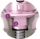

Conexão Helix Short: um sistema estável e para reabilitações complexas
Construído sobre uma nova plataforma protética, o Helix Short foi
projetado para permitir uma conexão protética profunda mesmo em um
implante curto. Uma única conexão independente do diâmetro do
implante:
